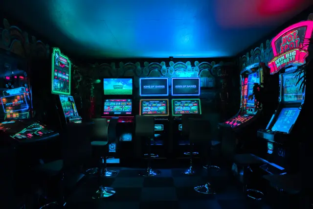
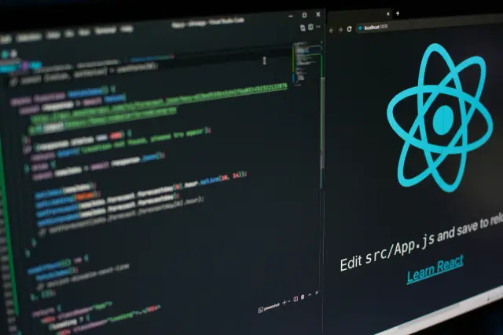

The Glass Ferry
A dual-timeline novel about a drowned village.
Novelist · Portfolio
NOVELIST
Two published novels, a third in revision, and notes app full of openings.
Selected work
A dual-timeline novel about a drowned village.

A weekly web serial with 40k readers.

Five consecutive Novembers, five drafts.
A curated collection with eleven authors.
A critique circle that survived six years.
A screenplay translation of book one.
About
Two published novels, a third in revision, and notes app full of openings.
Everything on this page is made to be scrolled slowly. The work below is the honest list — outcomes attached, fluff removed.
Currently
Focus — Story structure
Also — Character voice
Based — Lisbon
Services
Two published novels, a third in revision, and notes app full of openings. Story structure is where this shows up most — ask for examples on a call.
Two published novels, a third in revision, and notes app full of openings. Character voice is where this shows up most — ask for examples on a call.
Two published novels, a third in revision, and notes app full of openings. Revision is where this shows up most — ask for examples on a call.
Two published novels, a third in revision, and notes app full of openings. Worldbuilding is where this shows up most — ask for examples on a call.
Two published novels, a third in revision, and notes app full of openings. Query craft is where this shows up most — ask for examples on a call.
Two published novels, a third in revision, and notes app full of openings. Serial fiction is where this shows up most — ask for examples on a call.
Contact
guest@novelist-deep:~$ contact --init → name : Lena Falk → role : Novelist → email : hello@novelist-deep.io → response-time : within 24 hours guest@novelist-deep:~$ _
“Two published novels, a third in revision, and notes app full of openings.”